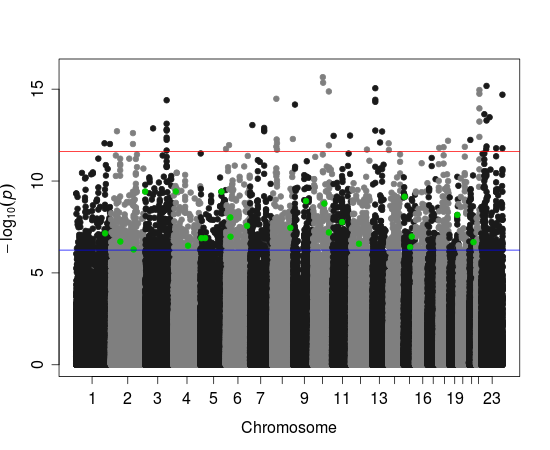

Eric Frichot, PhD Student
>PhD
>Publications
>Software
>Teaching
Computational and Mathematical Biology (BCM) Team
Contact :
 |
Email : | eric.frichot_[at]_imag_[dot]_fr |
| Phone: | +33 (0)4 56 52 00 68 | |
| Fax: | +33 (0)4 56 52 00 55 | |
| URL: | http://www-timc.imag.fr/Eric.Frichot/ | |
| Postal Adress: | Laboratory TIMC-IMAG - Team BCM, Pav. Taillefer, Faculté de Médecine, 38706 La Tronche cedex, France |
PhD top
October 2011 - present. Under the supervision of Olivier Francois
Doctoral school: EDISCE, Models, methods and algorithms in Biology, Health and Environment (MBS)
University of Grenoble, Université Joseph Fourier (UJF)
LFMM software top
LFMM: A program for testing association between loci and environmental gradients using latent factor mixed models
|  | Adaptation to local environments often occurs through natural selection acting on large number of alleles, each having a weak phenotypic effect. One way to detect those alleles is by identifying genetic polymorphisms that exhibit high correlation with some environmental gradient or with the variables used as proxies for ecological pressures. The LFM computer program includes an integrated framework based on population genetics, ecological modeling and statistical techniques for screening genomes for signatures of local adaptation. It implements fast algorithms using latent factor mixed models based on a variant of Bayesian principal component analysis in which residual population structure is introduced via unobserved factors. LFMM webpage (software, tutorial, R scripts) |
Publications top
- Eric Frichot, Sean Schoville, Guillaume Bouchard, Olivier Francois, 2012. Landscape genomic tests for associations between loci and environmental gradients, submitted. Download Arxiv preprint here.
- E. Frichot, S.D. Schoville, G. Bouchard, O. François Correcting principal component maps for effects of spatial autocorrelation in population genetic data, Frontiers in Genetics 3, 254, 2012. Link to Frontiers in Genetics. Download PDF.
- F. Jay, M. GB Blum, E. Frichot, O. François (2011). Modèles à variables latentes en génétique des populations. J. de la Société Française de Statistiques. Vol. 152 No 3. [ pdf ]
Conferences top
- E. Frichot, S. Schoville, G. Bouchard, O. François Correcting principal components of spatial population genetic variation under isolation by distance models. Poster. Theoretical and Empirical advances in evolutionary genomics. March 31 ¿ Apri 4, 2012, Roscoff (Brittany), France.
- E. Frichot, S. Schoville, G. Bouchard, O. François Correcting principal components of spatial population genetic variation under isolation by distance models. Poster. Mathematical and Computational Evolutionary Biology. June 18-22 2012. Montpellier, France.
- E. Frichot, S. Schoville, G. Bouchard, O. François A unified framework for inferring population genetic structure and gene-environment associations. Poster. SMBE. June 23-26 2012. Dublin, Ireland.
Teaching top
Teaching assistant in mathematics at
Université Joseph Fourier (UJF) Grenoble Institute of Technology- Mathematics (L1, L2, TD, TP) Université Joseph Fourier (UJF)
- Computer Science project (L3, Encadrement) Ensimag
- Modélisation Probabiliste pour l'Apprentissage (L2, TD) Ensimag - Link